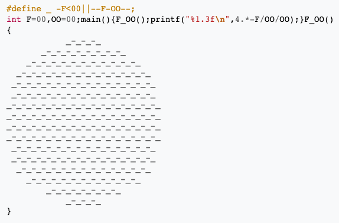
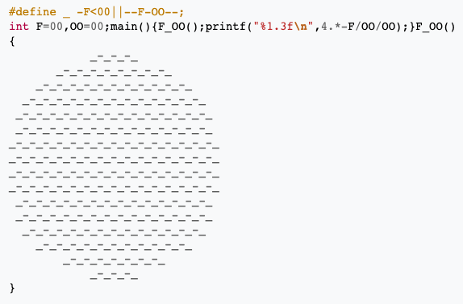

Steganography, the semantic root of which comes from the Ancient Greek ‘στεγανός’ meaning covered or concealed, refers to a practice of dissimulating a message by rendering it inconspicuous. It differs in this from cryptography, its more popular lexical doppelgänger, which relies on the illegibility of the message rather than its invisibility. Whereas the latter attempts to encrypt the meaning of the message using logical and technical ciphers, the former seeks to obscure the very existence of the message itself.
The above photograph illustrates one of the earliest known forms of steganography, described by Herodotus in his Histories (Petitcolas et al. 1065). By his telling, Histaeus, a Tyrant in 6th century BCE Greece, wanting to covertly convey information of strategic military importance, shaved the head of a servant to tattoo a message that would be dissimulated by hair regrowth. A more trivial, albeit demonstrative, example can be found in the childhood experience of writing in invisible ink, most often using lemon juice which, although initially imperceptible, becomes visible when singed.
While military intelligence has been the principal driver of steganography as well as cryptography, using techniques such as knitting (Zarelli), microdots and null ciphers, its applications beyond this domain are wide-ranging. Indeed, steganography has been applied from subversive social or political communication, an example of which can be seen in Erhard Schön’s anamorphic Vexierbild, to commercial protection as well as from social subgroup targeting, such as La Fundación Anar’s 2013 ad campaign against child abuse, to entertainment, be it poetic (Meurice), programmatic (IOCCC) or otherwise.

 

Although initially a linguistic matter, the advent of computation made encryption a principally technological affair. A particularly famous example is Alan Turing’s work decrypting the German Enigma machine. Since then, the practice has gained in complexity and diversity, and there now exists an impressive range of techniques to dissimulate information. Indeed, cybersteganographic messages can be concealed within images, sound files, video, network protocols as well as physical objects.
One glaring limitation of steganography in the context of web development is the accessibility of the underlying file to the minimally informed web surfer. This speaks directly to the longstanding conflict in security engineering over a phenomenon called security through obscurity - allegedly coined by the MIT’s Incompatible Timesharing System (ITS) team - which relies on secrecy as the principal method of concealment. This phenomenon suffers from a deficit of popularity in the face of the more cryptographic Kerckhoffs's principle, which holds that a message should be secure through its encryption key alone, even if the message in and of itself is public knowledge and assumed to be analysed in detail. However, there also exists a more ambiguous interstitial space between these two extremes, reliant in part on principles of psychological warfare. Examples of psychosteganography we could point to in the context of cybersecurity include obfuscation as well as honeypots.
While there is consequently much to be played with in this domain, the current website will experiment with technically simple forms of steganography, owing to the exploratory nature of the project and especially the limited technological skills of its creator. Rather than attempting to abide by strict security engineering principles and attain impenetrable outcomes, the intent here will be to explore steganographic encryption as the conceptual scaffolding around which newly acquired competencies in web development shall be dressed. Skills and techniques in HTML, CSS and Javascript learned in this class will be deployed and further refined in the context of a playfully puzzling website eschewing contemporary consumerist injunctions of sleek user-friendliness in favour of a mischievously interactive invitation to question our assumptions about the digital environment we often unreflectively bask in.
Concretely, the website will be centered around the mythical 404 error page, iterations of which the user will be able to navigate through via a variety of steganographic portals created by subverting style and script programming. It will present as a sort of choose-your-own-adventure situated somewhere between the cacophony of early internet art such as Jodi’s Jodi and the linearity of narrative websites such as The Boat, though it remains to be determined if the structure will be arborescent or rhizomatic, that is, whether there will be a central plot with auxiliary narrative branches or a more dispersed, non-linear experience.
Works cited
Jodi. Joan Heemskerk and Dirk Paesmans, 1995, wwwwwwwww.jodi.org/. Accessed 3 Oct 2021.
La Fundación Anar. “La Fundación Anar contra el maltrato infantil necesita fondos.” YouTube, uploaded by Grey Spain, 24 Apr 2013, www.youtube.com/watch?v=N0h1mgpn95s.
Lederberg, Esther MZ. “Rhetoric of Anamorphisms.” Esther M. Z. Lederberg Memorial Website, 2006, www.estherlederberg.com/EImages/Extracurricular/Renaissance+Baroque/Perspective+Art/Anamorphisms/Anamorphisms.html#ANAMORPHISMS.
Meurice, Guillaume. Cosme. Paris, Éditions Arthaud, 2018.
Petitcolas, Fabien AP, Ross J. Anderson, and Markus G. Kuhn. "Information hiding - A Survey." Proceedings of the IEEE, vol. 87, no. 7, 1999, pp. 1062-1078, www.petitcolas.net/fabien/publications/ieee99-infohiding.pdf.
The Boat. Nam Le, Matt Huynh, SBS, https://www.sbs.com.au/theboat/. Accessed 1 Nov 2021.
The International Obfuscated C Code Contest. Leo Broukhis, Simon Cooper and Landon Curt Noll, www.ioccc.org/. Accessed 1 Nov 2021.
Zarrelli, Natalie. "The wartime spies who used knitting as an espionage tool." Atlas Obscura vol. 1, 1 June 2017, www.atlasobscura.com/articles/knitting-spies-wwi-wwii.